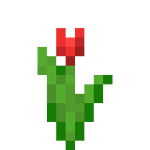
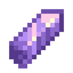
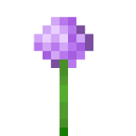
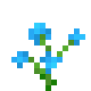
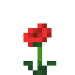

Fiche d'Identité
Nom : Overworld Cristal
Type : Objet
Rareté : Epic
Renouvelable : Oui
Stackable : Oui (64)
Premières apparitions : 1.0
Description
Le cristal de l'overworld est un précieux cristal qui fait partie des "cristaux magiques" dont son obtention est possible seulement avec un craft qui est de plus en plus dur en fonction de la dimention. Pour le cristal de l'overworld, il est obtenable via le craft si bas (n'importe quelle fleur peut être utilisée).
Crafting
|  |  |  |
 |
||
|  |  |
Utilisation
Le cristal de l'overworld est utilisé dans les crafts de l'XP et de la tête de joueur.
Achivement :
Historique de Version
- 1.0 : Cristal de l'overworld ajouté au jeu.
- 3.0 : Achivement ajouté au jeu.